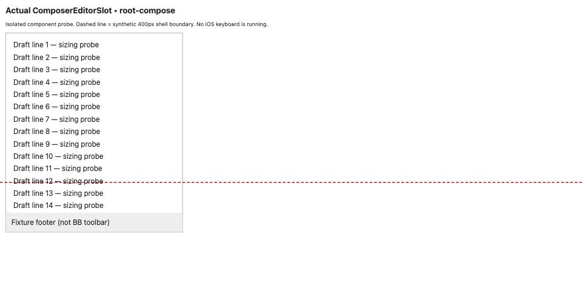

#3950 · Composer sizing and iOS verification limits
PARTIALLY REPRODUCED · Root-cause confidence: medium
1. TL;DR
The production editor component retains a viewport-based height cap when placed beside a smaller synthetic visible-area boundary. In a real Chromium render of the component, the new-chat cap is 395.1px and the fixture footer ends at 510.09px, beyond the 400px boundary. This is component-level evidence for a sizing mismatch, not a reproduction of the complete iOS app. The shell already has visual-viewport handling, and the fixture does not include its full layout. Native keyboard overlap, touch/caret trapping, and dictation remain unverified.
2. Claims vs findings
| Claim | Finding | Evidence |
|---|---|---|
| Editor sizing uses viewport-relative limits | Verified | Actual component computes root-compose 395.1px and thread 268.5px in a 633px-high browser. |
| Both layouts hide the toolbar behind an iOS keyboard | Unverified | Root fixture footer exceeds a synthetic 400px boundary; thread fixture footer is 383.5px and fits. No native keyboard or actual toolbar is in this fixture. |
| There is no keyboard-aware viewport handling | Refuted as a general explanation | The shell reads visualViewport.height and sets --bb-shell-height. The editor cap does not consume that value. |
| Timeline drag does not explicitly blur the input | Verified in source | Touch-move handler marks scroll intent only. Native keyboard dismissal was not exercised. |
| Native accessory is hidden | Verified in source | WebView passes hideKeyboardAccessoryView. The user-visible result was not tested. |
| Focused editor traps touch scrolling and blocks dictation | Unverified | Desktop programmatic scroll reaches the end (563px). This does not test iOS single-finger gestures or voice input. |
3. Environment
macOS arm64; Node 22.22.3; pnpm 9.15.0 via Corepack; HeadlessChrome 153.0.0.0, 1280×633. Two detached worktrees at the recorded base, with separate frozen installs. Probe servers use loopback ports 49350 and 49351 and separate temporary fixture directories. No BB server, runtime data, provider, or account is used.
The default pnpm launcher was broken; a temporary Corepack shim was used. The iOS simulator discovery command did not return within more than two minutes and was terminated. No available iOS browser was verified. Dependency installs and build status are recorded in the final verification section.
4. Minimal component reproduction
This is deliberately a limited component probe. It imports the unmodified ComposerEditorSlot, real React, and real Tiptap from trusted main. The fixture supplies 30 draft paragraphs and minimal equivalent scrolling/padding CSS. It omits the production shell, toolbar, full CSS, plugins, and native keyboard. The red boundary and footer are explicitly synthetic.
- Create two clean detached worktrees at the base commit.
- In each, run
corepack pnpm install --frozen-lockfile --prefer-offline. Use the repository's Turbo build for the app. - Download the three linked probe files into a separate directory. Run
node build.mjs /path/to/checkout /tmp/3950-fixture-a. - Run
python3 -m http.server 49350 --bind 127.0.0.1 --directory /tmp/3950-fixture-a. - Open
http://127.0.0.1:49350/?layout=root-composein the BB Browser Automation session. Keep the viewport at 1280×633. Run probe.js usingbb browser-automation run SESSION --script-file /path/to/probe.js --script-host HOST --json. - Repeat with
?layout=thread, then build from the second checkout to a separate fixture directory and repeat on port 49351.
Desired containment for the synthetic 400px budget: footerBottom ≤ 400. Actual: root fixture 510.09375 (outside); thread fixture 383.5 (inside). This is not an assertion about the complete app's rendered toolbar.
{
layout: 'root-compose',
viewportHeight: 633,
maxHeight: '395.1px',
editorHeight: 395,
scrollHeight: 832,
footerBottom: 510.09375,
syntheticShellHeight: 400
}
{
layout: 'thread',
viewportHeight: 633,
maxHeight: '268.5px',
editorHeight: 269,
scrollHeight: 832,
footerBottom: 383.5,
syntheticShellHeight: 400
}

Artifacts: fixture.tsx, build.mjs, probe.js, first root measurements, first thread measurements.
import React, { useRef } from 'react';
import { createRoot } from 'react-dom/client';
import { useEditor } from '@tiptap/react';
import StarterKit from '@tiptap/starter-kit';
import { ComposerEditorSlot } from './src/components/promptbox/ComposerEditorSlot';
function Fixture() {
const ref = useRef<HTMLDivElement>(null);
const layout = new URLSearchParams(location.search).get('layout') === 'thread' ? 'thread' : 'root-compose';
const editor = useEditor({extensions:[StarterKit],content: Array.from({length:30},(_,i)=>`<p>Draft line ${i+1} — sizing probe</p>`).join('')});
return <><h1>Actual ComposerEditorSlot • {layout}</h1><p>Isolated component probe. Dashed line = synthetic 400px shell boundary. No iOS keyboard is running.</p><div id="boundary"/><section><ComposerEditorSlot editor={editor} scrollContainerRef={ref} inputLocked={false} isCompactLayout={false} minHeight={48} layout={layout} resolveMentionLink={undefined}/><footer>Fixture footer (not BB toolbar)</footer></section></>;
}
createRoot(document.getElementById('root')!).render(<Fixture/>);
const p = await browser.getPage('main');
console.log(await p.evaluate(() => {
const e = document.querySelector('[data-promptbox-editor-scroll]');
return {
layout: new URLSearchParams(location.search).get('layout'),
viewportHeight: innerHeight,
maxHeight: getComputedStyle(e).maxHeight,
editorHeight: e.clientHeight,
scrollHeight: e.scrollHeight,
footerBottom: document.querySelector('footer').getBoundingClientRect().bottom,
syntheticShellHeight: 400
};
}));
5. Root cause and limits
Editor caps use 50dvh and 70dvh, minus 3rem. The rendered style applies them directly. Meanwhile shell resizing uses visualViewport.height and writes --bb-shell-height. A cap tied to the browser viewport can therefore remain larger than a separately reduced shell budget. The real component probe confirms the cap calculation, but the complete iOS layout is needed to establish the final toolbar position and the root cause of native gestures.
Timeline touch handlers mark scroll intent without blur. Native WebView configuration hides the accessory bar. Compact follow-up configuration omits the explicit collapse callback. These are supporting observations, not a proof that every keyboard-dismissal route is unavailable.
6. Proposed next test
On iOS Safari and the native WebView, record shell bounds, visualViewport height, editor bounds, and actual toolbar bounds before and after entering a long draft. Exercise one-finger scrolling, timeline drag, and keyboard dismissal. If that confirms sizing as the cause, reuse the shell's existing height signal when bounding the editor, reserving space for actual controls. Do not select a new fixed percentage or change touch behavior until measured. No fix PR is safe under this rule because the full reported failure has only been partially reproduced and no qualifying failing regression test was established.
7. Related issues and PRs
No linked open PR appeared in the issue timeline or in the open-PR search for issue 3950. Related repository reports: #3601 (mobile follow-up controls) and #3179 (mobile suggestions). Their claims were not used as executable evidence.
8. Verification
The same agent repeated the component probe in a second clean detached checkout at 3a1178164f8cce6d7986d2627c03ffaedb8a6428, with its own frozen dependency install, bundle output directory, and loopback server on port 49351. No BB data directory was needed. Both production checkouts had empty git status.
Repeated commands: node build.mjs /path/to/second-checkout /tmp/3950-fixture-b; python3 -m http.server 49351 --bind 127.0.0.1 --directory /tmp/3950-fixture-b; the same Browser Automation navigation and probe.js for both layouts.
Both measurement sets match the first run exactly: root-compose footerBottom 510.09375, cap 395.1px; thread footerBottom 383.5, cap 268.5px. Artifacts: second root measurements and second thread measurements. Bundle contents also match after normalizing only checkout paths. An expired browser session and transient endpoint timeouts required opening a new session before collecting the repeated measurements.
Correction from the initial broad hypothesis: the thread fixture fits the 400px synthetic boundary. Neither run proves actual iOS toolbar occlusion. The final verdict therefore remains partial. Confidence is medium for the possible sizing mechanism, not for untested native gestures.
Both frozen installs completed successfully. The component bundle built successfully in both checkouts. The normal Turbo app build initially failed through the broken pnpm launcher; a retry with a Corepack shim reached Vite but was stopped after approximately eight minutes without completion. No full app build success or regression-suite pass is claimed. No production fix was made, so no before/after regression result is claimed.
9. Appendix and trust boundary
Issue content was treated only as untrusted claims. No proposed patch, external issue link, issue-provided command, or linked PR code was executed. Probe code was authored from trusted repository source. No production source was modified. Reproduction scripts and raw measurement files are linked above. There is no claim of independent verification: both checkout runs were performed by the same agent.